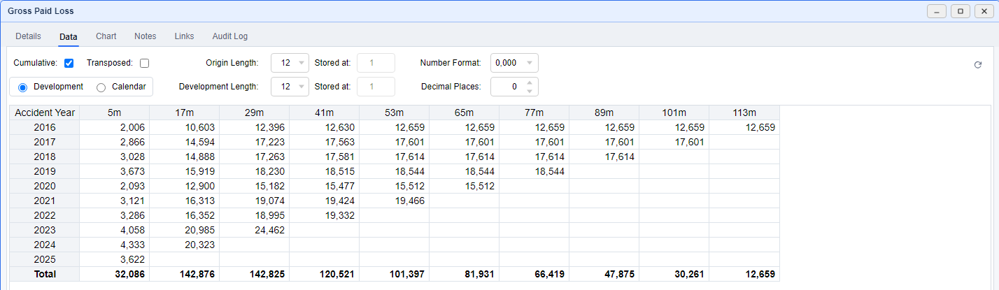

Dataset Viewer
Inspect a triangle or vector
Read the data, check its identity and period lengths, and record the observations that support your review.
Open Gross Paid Loss
- Open the demo Project Page and select Commercial Auto → All States → CH02 → Comprehensive.
- Find Gross Paid Loss in the dataset table and double-click its row.
- On Data, confirm the dataset name, cumulative view, and 12-month origin and development lengths.
- Read the latest available cell in each origin row. Blanks beyond the triangle boundary represent unavailable future development.

Check the Dataset's Identity
- Open Details and inspect Name and Dataset Type.
- Check Precedents to see what feeds the dataset and Dependents to see which outputs use it. Click a listed dataset or method to inspect it.
- When a formula is shown, read it as the definition of the calculated dataset. Its definition is maintained in Project Explorer's Dataset Types.
To inspect a method's output as data, return to the Project Page, right-click its vector row, and choose Show as vector.
Change the View and Copy Values
- On Data, use the available view controls to inspect cumulative/incremental values, development/calendar layout, or a transposed view.
- Choose Number Format and Decimal Places to make the amounts easy to read.
- Select a cell or drag a rectangular range, then press Ctrl + C to copy values. Use row or column headers to select larger ranges.
- Open Chart to compare series. Use its legend checkboxes to show the lines you need; right-click a legend item to isolate it.
Record and Save Your Review
- Open Notes and record the reason for your review, for example: “Jordan Lee: checked the latest Gross Paid Loss diagonal.”
- If editable cells use Excel references, open Links to inspect or refresh their sources before saving.
- Choose Save or press Ctrl + S. Wait for the save and any dependent-update report.
- Open Audit Log to inspect saved changes, then return to the Project Page.
Continue to Development Factor Method to use the triangle in a method.